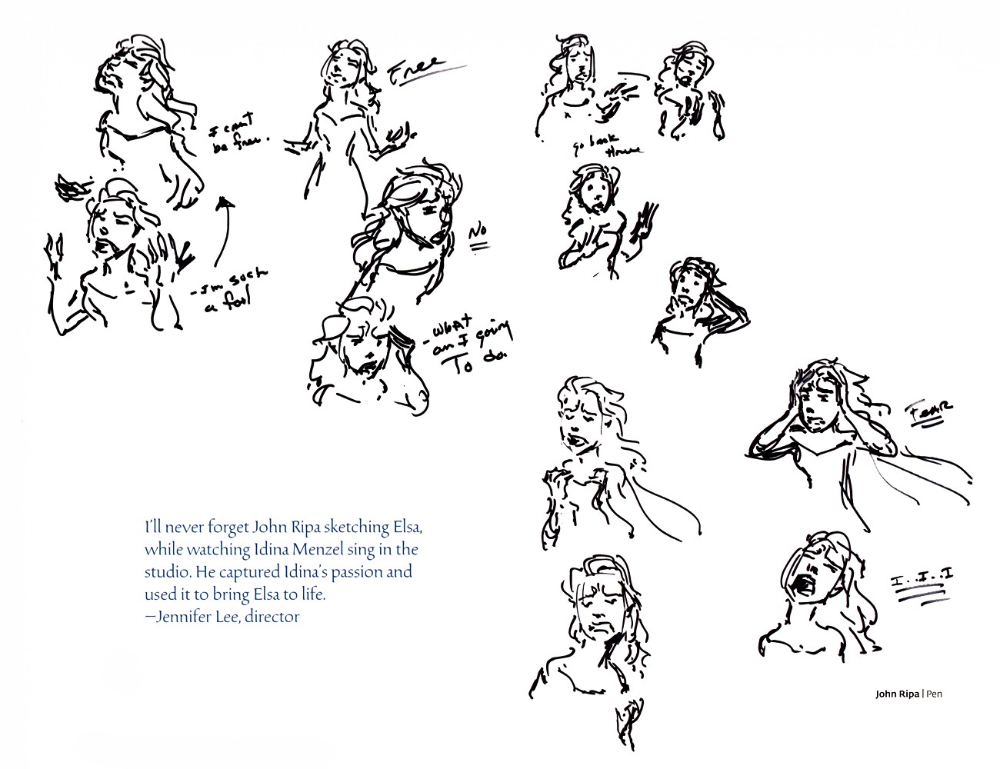

🎙️ 制作卷 · 幕后

艾莎演唱 · 热情速写配音阵容全档案：John Ripa 边听 Idina Menzel 录音边画下的速写——每个小批注都是被歌声点亮的瞬间。 | 来源：官方设定集《The Art of Frozen》
配音阵容全档案
Idina Menzel 的一个高音、Josh Gad 的一次即兴、录音棚里边听边画的故事艺术家——配音是迪士尼动画隐藏的第一层表演。两部电影的全阵容档案。
❄️ F1 主要配音（2013）
- 艾莎 Elsa — Idina Menzel
：百老汇出身（《吉屋出租》《魔法坏女巫》）；凭 Let It Go 成为首位打入 Billboard Hot 100 前五的托尼奖得主。- 安娜 Anna — Kristen Bell
：自称“从小就是迪士尼铁粉”，为安娜试音时的松弛与傻气直接定了角色基调。- 克里斯托夫 Kristoff — Jonathan Groff
：剧场出身，称迪士尼动画的工作方式“像排一部百老汇戏”。- 雪宝 Olaf — Josh Gad
：早期动画测试配音直接被采用为成片第一场；他的即兴是雪宝幽默的重要来源。- 汉斯 Hans — Santino Fontana
：音乐剧演员，完美演绎“甜”与“冷”的一线之隔。- 威斯顿公爵 — Alan Tudyk
：迪士尼“御用配角”传统的延续。
🍂 F2 新增配音（2019）
- 伊杜娜 Iduna — Evan Rachel Wood
：同时也是《Myth: A Frozen Tale》的叙述者；摇篮曲 All Is Found 由她演唱。- 阿格纳尔 Agnarr — Alfred Molina
。- 马蒂亚斯将军 — Sterling K. Brown
。- 耶拉娜 Yelana — Martha Plimpton；霍妮玛伦 Honeymaren — Rachel Matthews；赖德 Ryder — Jason Ritter
。- 雪宝
——Josh Gad 第七次为雪宝配音（含番外与短片）。
🎙️ 录音棚里的名场面
- John Ripa 边听边画
——Idina Menzel 录音时，故事艺术家 John Ripa 在棚内速写她的激情姿态，这些速写成为艾莎演唱段落的表演蓝本（设定集 p018）。- 雪宝首场即成片
——Josh Gad 的早期测试录音配上临时动画后效果拔群，直接被用于成片。- 剧场班底
——主配音几乎全是音乐剧背景，这正是两部电影歌曲表演“像舞台现场”的原因。
💡 为什么配音如此重要
两部电影的歌曲多为“现场感”录制——Lopez 夫妇要求歌手把台词的语气唱进歌里。配音表演不只是给角色贴声，而是角色表演的第一层动画。
📌 收录说明
本页事实均来自官方声带/官方出版物/权威媒体，出处标注于各节；存疑处已明确标注“待核实”。